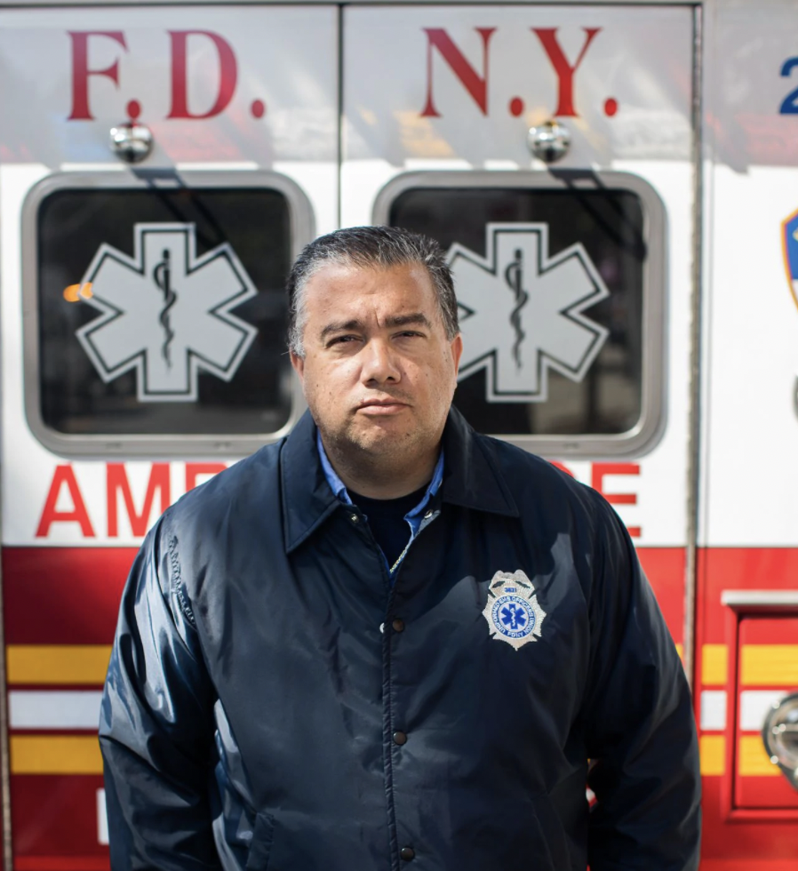

Wheater site plan
Target Audience
Description:
The audience from this website are people who want to know about the weather in the city and tourists. The age of this audience are between 18 to 60 years old.
Personas:
Marck Benito
Ocupation:
Courier Driver
Demographics and Education:38 years old. Supply Chain Management Certificate
Goals and motivation for using the site:Know how the weather in the city is and take beter desicions for his route
Paul Hale
Ocupation:
Parademic in emergencies
Demographics and Education:28 years old. He has a Asociate of Science in Nursing
Goals and motivation for using the site:As a paramedic, he needs to know how the weather is the city in order to be prepared for any natural disaster.